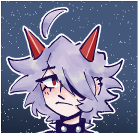
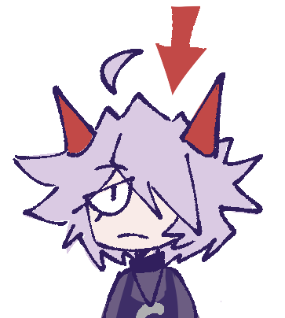
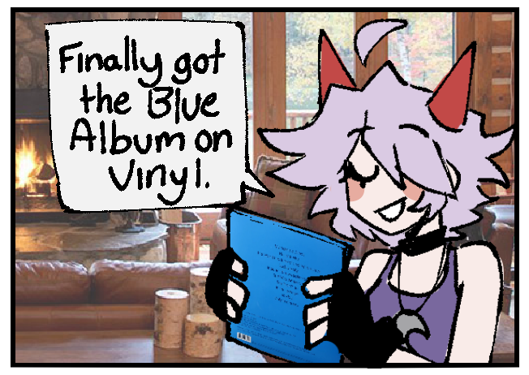
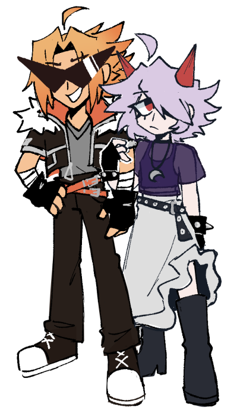
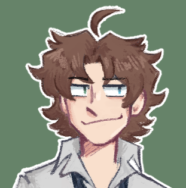

She's just here to hang out.
Tsukimi is an 18-year-old girl who aspires to become the greatest bass guitarist in the universe.
Her start in music came from a band she formed in middle school and they were somewhat successful. She was also a great student with a promising future. However, nothing went according to plan as Tsukimi's life suddenly changed after meeting two very out of this world individuals. Soon, the three of them were happily travelling the multiverse together.
Despite all the supernatural situations she finds herself in, and the unusualness of her friends, Tsukimi is surprisingly calm and laidback. Given her grunge-influenced style, it is no surprise that she is also extremely cool while not flaunting it or making it her entire personality. One may describe her as the older sister type who tries to look out for everyone the best she can.
Most people think she looks bored, but it's because she often stares off into space like the image below.
Besides being extremely good with the bass guitar, Tsukimi does have experience with a few other instruments such as the piano and drums. Her life is surrounded by music as she spends a lot of time just listening to various genres. Her playlist can be found here
Her interest in fashion also plays a key part in how she expresses herself. She is often changing her hairstyle or playing around with different fashion subcultures. As long as her outfit has some kind of purple in it, she can make anything work. That’s her favourite colour! If there is a certain piece of clothing she can’t find, Tsukimi will just sew it and make it for herself. This is her way of saving money.
Some more of her favourite things are below:
Her friends are certainly interesting, and much more bizarre than she is. It is quite incredible that she can put up with their antics.
First is her boyfriend, Akira, who has quite a striking look to him. The sharp pointy sunglasses and blonde hair makes him look like the sun had decided to shop at Hot Topic. His constant grin couldn’t make it any more obvious that he is quite the opposite to Tsukimi. He’s always trying to show off his combat abilities, while making time to make sure everyone knows how awesome he is.
Then there’s Asterisk. He possesses abilities that allow him to do whatever he wants, which includes time travel AND multidimensional travel. Asterisk mostly uses his powers to summon hotdogs or whatever wacky thing he could think of in the moment.
Tsukimi questions if he even knows her name.
Tsukimi and all the art on this page were made by me.